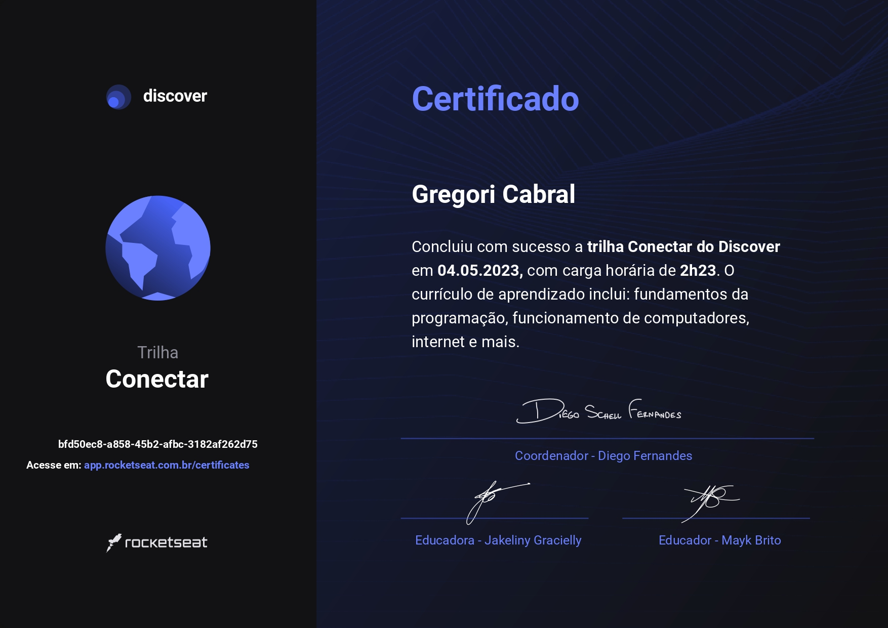

04 de Maio de 2023
Meu Primeiro Certificado da Rocketseat

Após mais ou menos uma semana, consegui meu primeiro certificado na Rocketseat, foi uma experiencia incrível, a maneira como a Rockeatseat ensina é surreal. Agora estou indo para a trilha fundamentar, MAS, antes vou participar da NLW Spacetime, claro.